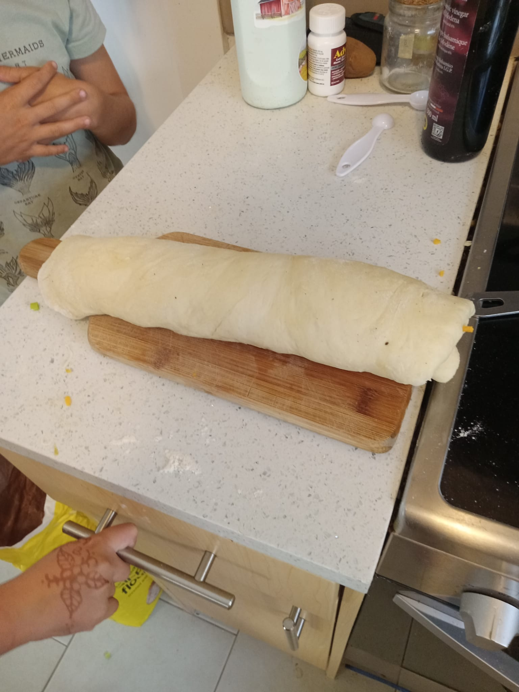

I will show you some stuff.
this is the breads and pastrys section i will not teach you safety you have to look that up yourself
today I will yeach you how to make cheese and ham buns (ham is optional so as everything else
this recipe will make approximately 12 cheesebuns
ingredients;
2 1/2 to 3 cups all purpose or bread flour,
2 teaspoons sugar
1/4 teaspoons salt
1 package regular or quick active dry yeast,1/4 cup olive or vegatable oil,1 cupvery warm water(120 to 130degrees),
step 1:Mix 1 cup of the flour,the sugar and the salt,and yeast
in large bowl.Add 1/4 cup oil and the water. Beat with
mixer on medium speed 3 minutes, scraping
bowl occasionally. stir in enough remaining flour until
dough is soft and leaves side of bowl.
